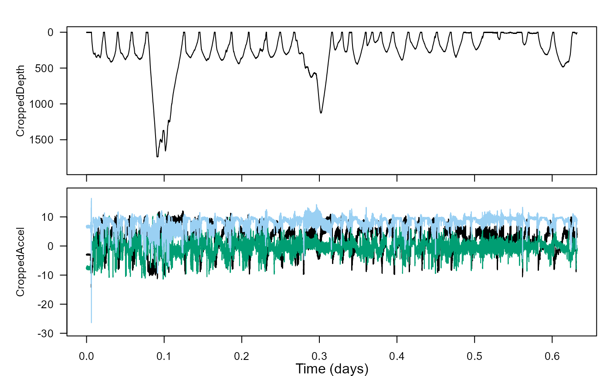

dive-stats.RmdWelcome to this vignette! On behalf of the team behind tagtools, thanks for taking some time to get to know our package. We hope it sparks joy.
In this vignette you will learn to use the function dive-stats to compute summary statistics for a given dataset containing dives, including adding an auxiliary variable.
Estimated time for this vignette: 25 minutes.
These practicals all assume that you have R/Rstudio, some basic experience working with them, and can execute provided code, making some user-specific changes along the way (e.g. to help R find a file you downloaded). We will provide you with quite a few lines. To boost your own learning, you would do well to try and write them before opening what we give, using this just to check your work.
Additionally, be careful when copy-pasting special characters such as _underscores_ and ‘quotes’. If you get an error, one thing to check is that you have just a single, simple underscore, and 'straight quotes', whether 'single' or "double" (rather than “smart quotes”).
Consider a dataset from a DTAG attached to a Cuvier’s beaked whale, Ziphius cavirostris. Load the data from file zc11_267a.nc. This dataset is built into the tagtools package, so you can access it using system.file.
library(tagtools)
ZC_file_path <- system.file("extdata", "zc11_267a.nc", package = "tagtools", mustWork = TRUE)
ZC <- load_nc(ZC_file_path)There are some very deep dives in this profile! This is perhaps to be expected for Cuvier’s beaked whales, with their reputation for mysteriously extreme excursions.
#> [1] "Results for `crop(ZC$P)`:"
#> [1] "---------------------------------------"#> [1] "Position your cursor and then click once followed by clicking FINISH to change the start, or click twice in the same spot followed by clicking FINISH to change the end. If you wish to change both the start and end click once at the start time desired and twice at the end time desired."
#> [1] "Results for `str(ZPCr, max.level = 1)`:"
#> [1] "---------------------------------------"
#> List of 18
#> $ data : num [1:330359(1d)] 2.15 2.13 2.16 2.16 2.13 ...
#> $ sampling : chr "regular"
#> $ sampling_rate : num 5
#> $ sampling_rate_unit: chr "Hz"
#> $ depid : chr "zc11_267a"
#> $ creation_date : chr "2017-08-08 04:55:39"
#> $ history : chr "sens_struct"
#> $ type : chr "P"
#> $ full_name : chr "Depth"
#> $ description : chr "dive depth"
#> $ unit : chr "m H2O"
#> $ unit_name : chr "meters H2O (salt)"
#> $ unit_label : chr "meters"
#> $ start_offset : num 0
#> $ start_offset_units: chr "second"
#> $ column_name : chr ""
#> $ frame : chr ""
#> $ axes : chr "D"No less than fifty meters seems like a reasonable choice to detect this animal’s dives. After all, most of the dives this animal performs are more than 100 meters in depth.
find_dives to detect all dives deeper than your chosen minimum depth mindepth.
mindepth <- # your chosen minimum depth here
dt <- find_dives(ZPCr, mindepth=mindepth) Going forward, the code will have assumed a minimum depth of \(50 m\).
dive_stats to compute summary statistics for all the dives you detected.
ds <- dive_stats(ZPCr, dive_cues=dt[,c('start', 'end'),])
str(ds)#> 'data.frame': 25 obs. of 12 variables:
#> $ num : int 1 2 3 4 5 6 7 8 9 10 ...
#> $ max : num 1737 356 395 391 438 ...
#> $ st : num 6728 10925 12624 14304 16177 ...
#> $ et : num 10806 12510 14230 16091 18027 ...
#> $ dur : num 4078 1585 1606 1787 1850 ...
#> $ dest_st : num 7698 11212 13093 14768 16636 ...
#> $ dest_et : num 8954 11802 13705 15391 17170 ...
#> $ dest_dur : num 1255 590 612 623 534 ...
#> $ to_dur : num 970 287 469 465 459 ...
#> $ from_dur : num 1852 709 525 700 857 ...
#> $ to_rate : num 1.521 1.055 0.715 0.714 0.809 ...
#> $ from_rate: num -0.797 -0.426 -0.638 -0.473 -0.434 ...Compute the auxiliary variable, and then recompute the dive stats including the auxiliary variable.
One example auxiliary variable—pitch—is given below.
The function a2pr will calculate pitch and roll from acceleration. To use the acceleration data, we’ll want it cropped to the same time window as we’ve cropped the depth data.
ZACr <- crop_to(ZC$A, tcues = ZPCr$crop)
# plot to confirm the cropping
plott(X=list(CroppedDepth=ZPCr, CroppedAccel=ZACr),
r=c(TRUE,FALSE)) # and reverse the y-axis for depth, but not acceleration 
And now to compute pitch:
ZPiCr <- a2pr(ZACr)$p # this is the variable you'll want to use laterUse the auxiliary variable of your choice (if you were following the example above, you’ll use ZPiCr) for my_aux_var.
dsAux <- dive_stats(P = matrix(ZPCr$data), sampling_rate = ZPCr$sampling_rate, dive_cues=dt[,c('start', 'end'),], X=matrix(my_aux_var))
# if you are using ZPiCr
dsAux <- dive_stats(P = matrix(ZPCr$data),
dive_cues=dt[,c('start', 'end'),],
X = matrix(ZPiCr), # to avoid nrow != ncol errors
angular = TRUE, # because this is pitch angle data
sampling_rate = c(5, 5) # sampling rate is 5 for P & X
)
str(ds, max.level = 1)
str(dsAux, max.level = 1)
plott( # ... figure out what you want to plott; results not shown for this part
)#> [1] "Results for `str(ds, max.level = 1):`"
#> [1] "-----------------------------------------"
#> 'data.frame': 25 obs. of 12 variables:
#> $ num : int 1 2 3 4 5 6 7 8 9 10 ...
#> $ max : num 1737 356 395 391 438 ...
#> $ st : num 6728 10925 12624 14304 16177 ...
#> $ et : num 10806 12510 14230 16091 18027 ...
#> $ dur : num 4078 1585 1606 1787 1850 ...
#> $ dest_st : num 7698 11212 13093 14768 16636 ...
#> $ dest_et : num 8954 11802 13705 15391 17170 ...
#> $ dest_dur : num 1255 590 612 623 534 ...
#> $ to_dur : num 970 287 469 465 459 ...
#> $ from_dur : num 1852 709 525 700 857 ...
#> $ to_rate : num 1.521 1.055 0.715 0.714 0.809 ...
#> $ from_rate: num -0.797 -0.426 -0.638 -0.473 -0.434 ...
#> [1] "Results for `str(dsAux, max.level = 1):`"
#> [1] "-----------------------------------------"
#> 'data.frame': 25 obs. of 20 variables:
#> $ num : int 1 2 3 4 5 6 7 8 9 10 ...
#> $ max : num 1737 356 395 391 438 ...
#> $ st : num 6728 10925 12624 14304 16177 ...
#> $ et : num 10806 12510 14230 16091 18027 ...
#> $ dur : num 4078 1585 1606 1787 1850 ...
#> $ dest_st : num 7698 11212 13093 14768 16636 ...
#> $ dest_et : num 8954 11802 13705 15391 17170 ...
#> $ dest_dur : num 1255 590 612 623 534 ...
#> $ to_dur : num 970 287 469 465 459 ...
#> $ from_dur : num 1852 709 525 700 857 ...
#> $ to_rate : num 1.521 1.055 0.715 0.714 0.809 ...
#> $ from_rate : num -0.797 -0.426 -0.638 -0.473 -0.434 ...
#> $ mean_angle : num 0.3 0.369 0.327 0.346 0.338 ...
#> $ angle_var : num 0.3087 0.0978 0.113 0.0972 0.0784 ...
#> $ mean_to_angle : num -0.85 -0.356 -0.252 -0.201 -0.201 ...
#> $ mean_dest_angle: num 0.209 0.348 0.345 0.378 0.337 ...
#> $ mean_from_angle: num 0.832 0.635 0.782 0.673 0.606 ...
#> $ to_angle_var : num 0.0763 0.1025 0.0737 0.0446 0.0565 ...
#> $ dest_angle_var : num 0.2638 0.0326 0.0264 0.0195 0.022 ...
#> $ from_angle_var : num 0.0398 0.0245 0.0139 0.0581 0.0186 ...You’ve learned a couple of ways to use dive-stats. Well done!
If you’d like to continue working through these practicals, consider rotation-test or fine-scale-tracking .
Animaltags home pages: http://animaltags.org/ (old), https://animaltags.netlify.app/ (new), https://github.com/stacyderuiter/TagTools (for latest beta source code), https://stacyderuiter.github.io/TagTools/articles/TagTools (vignettes overview)